Altera MAX10 10M02SCM >> VHDL
LED
由於STEP小脚丫出了兩款FPGA迷你開發板，分別是Lattice MXO2和Altera MAX10，價格相當親民並且開發板上已經加上JTAG下載電路，不須額外購買燒錄器，實為相當方面，加上司徒相當喜愛小巧的開發板，於是司徒打算針對這兩款開發板寫一些教學文章，而Lattice MXO2開發板已經使用Verilog語言介紹過了，因此，Altera MAX10則會換成使用VHDL語言介紹，如果有看過司徒相關教學文章的人，應該可以發現，司徒不會從基本的語法談起，取而代之的則是，點出一些有趣的觀點給大家了解，這樣或許可以幫助大家了解，如何使用它以及為何要使用它，待釐清觀點後，自然而然會做進一步的學習，這時候再把語法當作手冊查詢會比較恰當，司徒也盡力以簡潔的程式框架當作介紹主軸，期許這樣的文章可以幫助到一些人，接著，司徒就介紹一下如何點亮LED，過程如下說明。
新專案
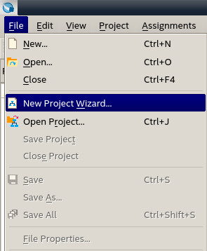
儲存路徑
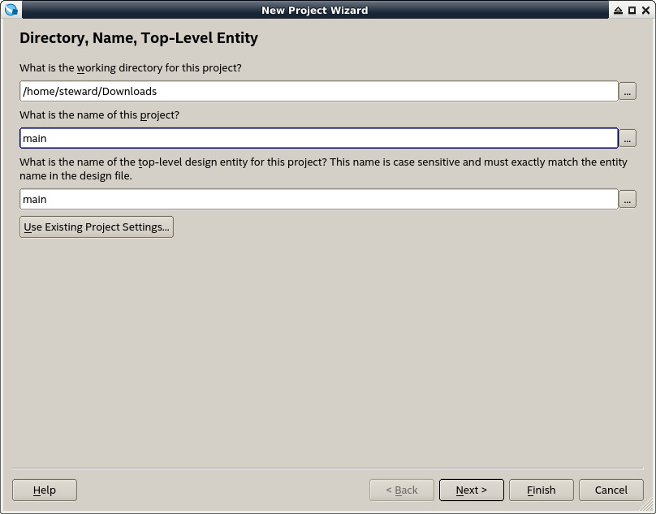
Next
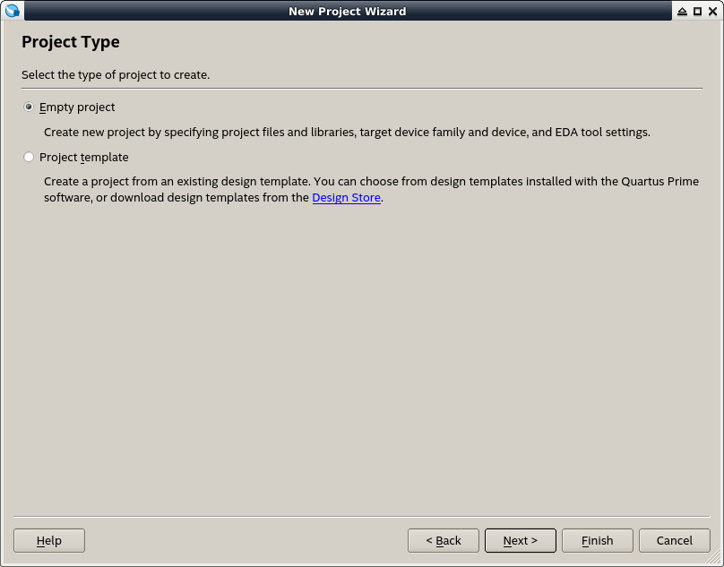
Next
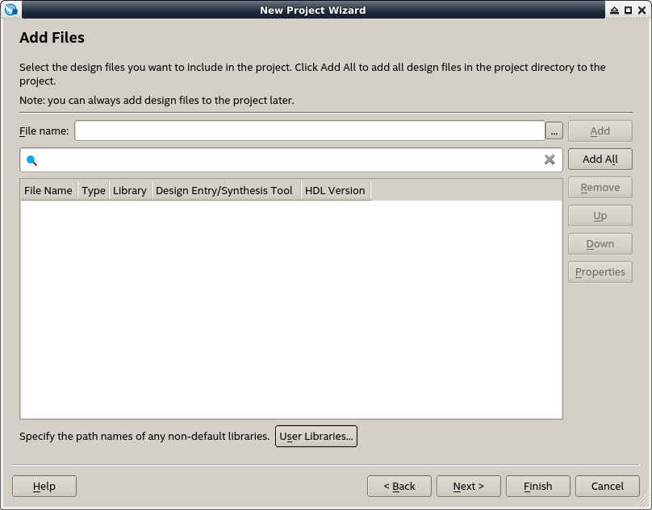
選擇10M02SCM153C8G、MGBA、153
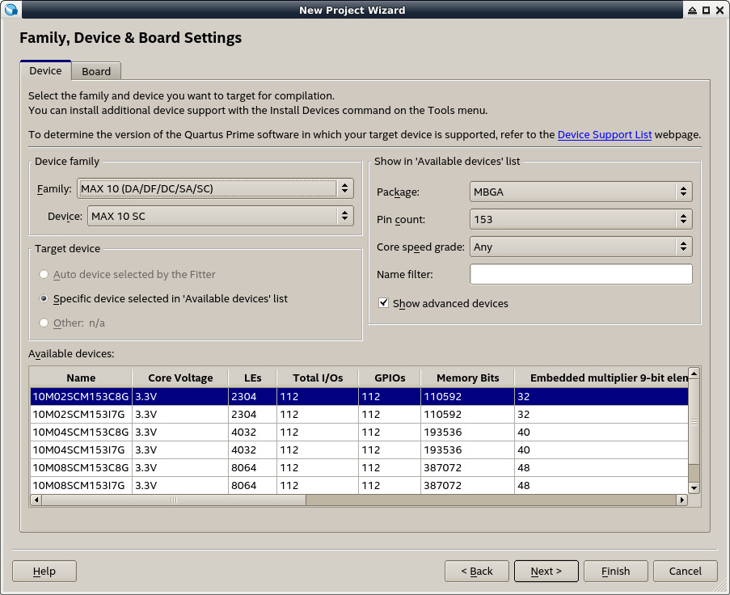
新增完成
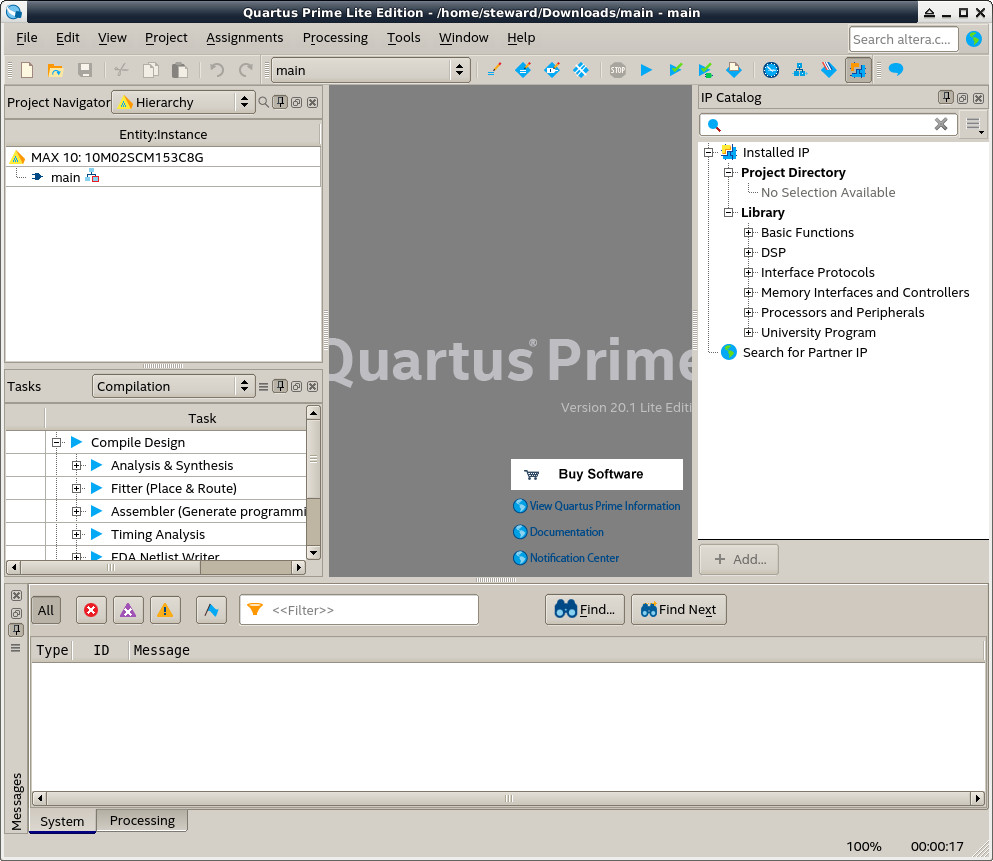
新增VHDL檔案
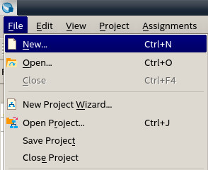
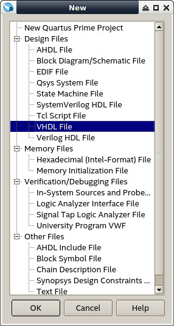
程式碼如下：
library ieee;
use ieee.std_logic_1164.all;
entity main is
port(
btn: in bit;
led: out bit
);
end main;
architecture logic of main is
begin
led<= btn;
end logic;
相較於Verilog語言，VHDL會比較嚴謹且語法比較偏向Pascal語言，上例就是把btn輸入當做led輸出
儲存
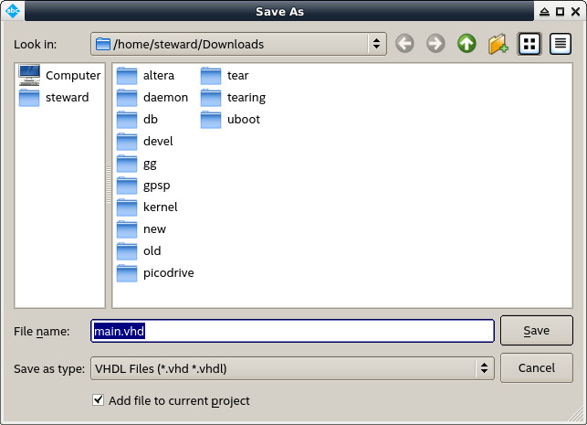
Synthesis
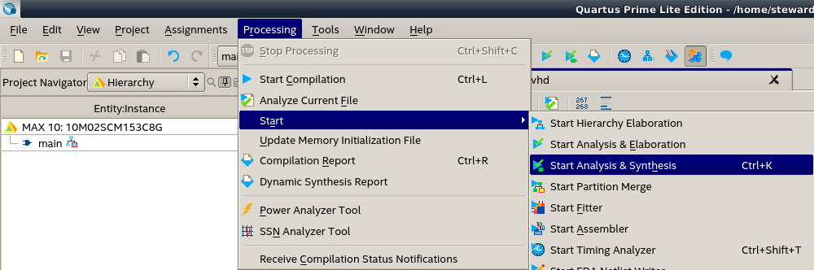
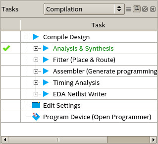
指定Pin腳位
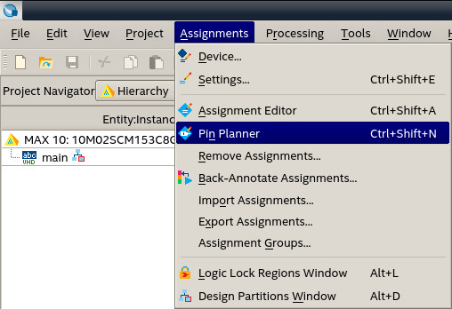
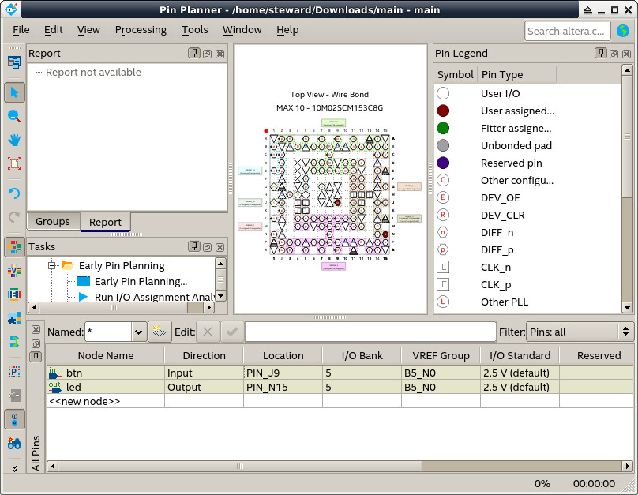
編譯
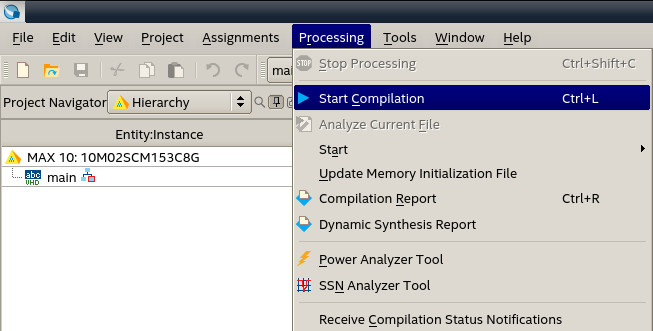
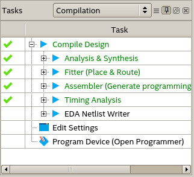
Programmer
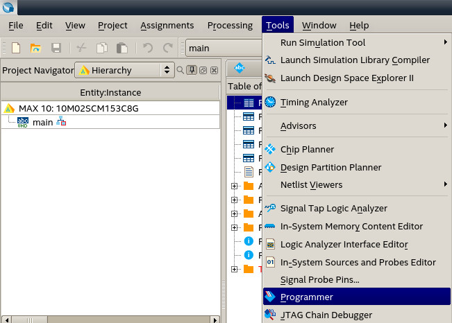
Hardware Setup...
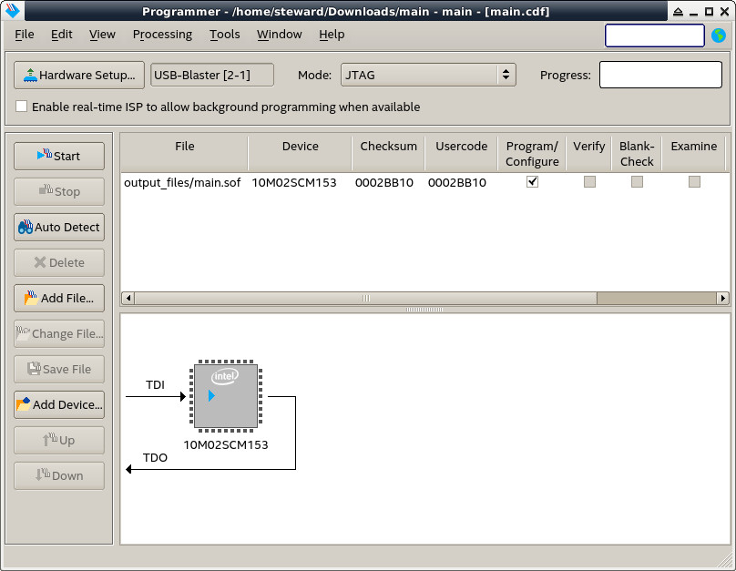
Currently selected hardware
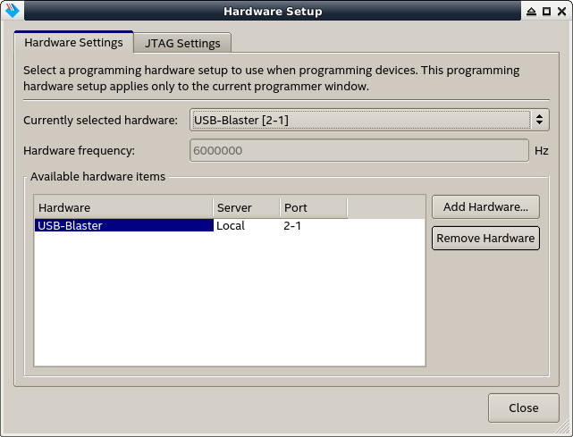
按下Start燒錄
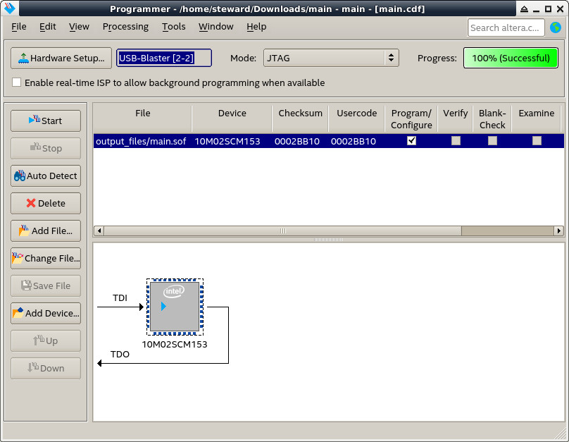
完成
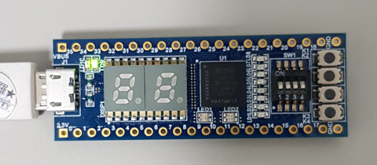
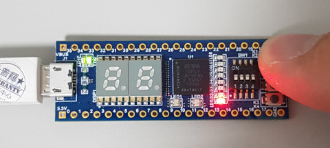